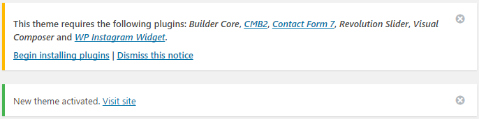
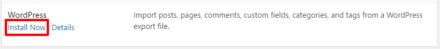
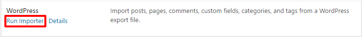
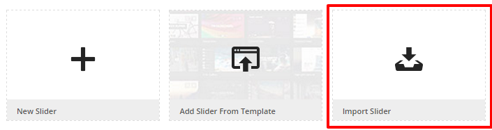
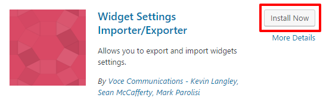
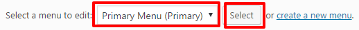
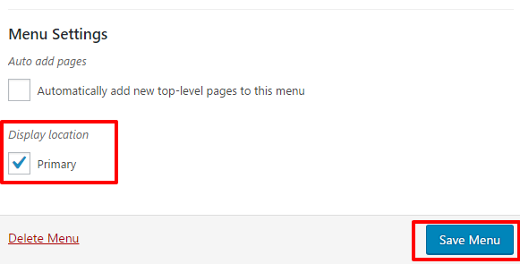
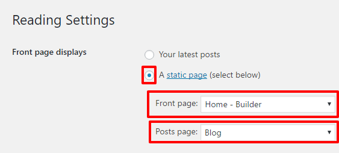

Thank you for purchasing Builder Wordpress Theme! In this document you will find the latest information on how to install, manage and update your theme, as well as create content, install plugins, import Demo data etc. If you like our theme and want to support us please rate it 5 star from your Downloads Section
ITEM NAME: Builder - WordPress Construction Theme
ITEM VERSION: 1.0
MINIMUM REQUIRED: WordPress version 4.3.0
AUTHOR: iThemesLab
SUPPORT VIA EMAIL: ithemeslab[@]gmail.comTheme Installation
#back to topOnce you purchase Builder from Themeforest, you can download the theme package. After you UnZIP the package you will find the theme file in it builder.zip . There are 2 ways to install your theme, both are described step by step below.
Installation via WordPress
#back to topStep 1: Login to your WordPress Dashboard
Step 2: Go to Appearance > Themes. Click the Add New button or Add new theme link.
Step 3: Click on the Upload Theme button. Locate "builder.zip" and click Install Now
Step 4: Click on the Activate button to activate Builder. Congratulations, you have now activated Builder! You can now proceed with Builder's Plugin Installation.
Installation via FTP
#back to topStep 1: Log into your Hosting server using an FTP client (like FileZilla or WinSCP).
Step 2: Locate "builder.zip" that you found in your ThemeForest Package and unzip it somewhere on your hard drive. Once it is unzipped it will look like a folder named builder with all theme files in it.
Step 3: Locate your WordPress installation and upload the theme directory builder (you unzipped in the previous step) into ../wp-content/themes/ in your WordPress installation.
Step 4: Click on the Activate button to activate Builder from your back-end. Congratulations, you have now activated Builder! You can now proceed with Builder's Plugin Installation.
Plugin Installation
#back to topOnce you activate the theme you will get a notice like (This theme requires the following plugins:) the screenshot below. Then click on Begin installing plugins

Once you click Begin installing plugins you will redirect to Install Required Plugins page just like screenshot below.

Step 1: Select All Plugins
Step 2: Select Install from dropdown menu.
Step 3: Click Apply and wait for a while.
Step 4: After installed all the plugins please activate all the plugins one by one.
Import Sample Data
#back to topTheme Sample Data
After activated all the plugins time to import sample data. Go to Tools > Import and install WordPress importer plugin.

After install the plugin click on Run Importer.

Please locate the builder.wordpress.sample.data.xml and click Upload file and import
Select a user and checked Download and import file attachments.
Click Submit and wait for a while.
Slideshow Sample Data
Click Slider Revolution from left side menu. Select Import Slider and locate builder-slideshow.zip and click Import Slider

Widget Sample Data
At first go to Plugins > Add New and search for Widget Settings Importer/Exporter. Install this plugin and Activate it.

Then go to Tools > Widget Settings Import. Locate widget_data.json and click Show Widget Settings. Do as you can see in the screenshot below.

Menu Setup
#back to topIf sample data imported then go to Appearence > Menus and find Primary Menu from upper left dropdown list. Then assign the menu in Primary display menu location.


Assign Home Page
#back to topGo to Settings > Reading. Change the settings as like screenshot below.
